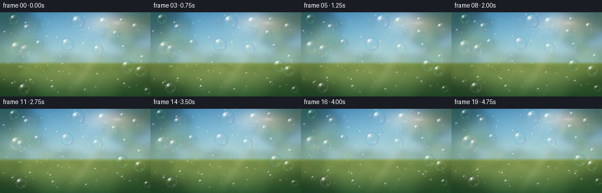
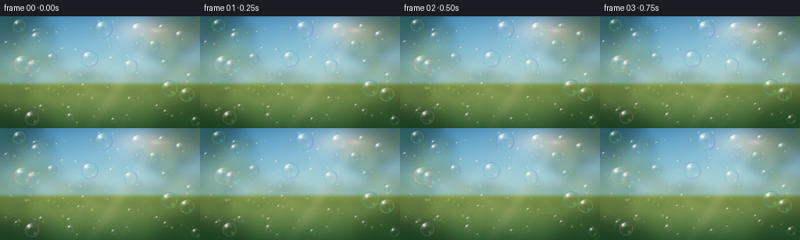

CODING AGENTS AS PIXEL WORLD MODELS
traex/DeepSeek-V4.1-Flash · phygen_076
点击播放 · 原生 RGB 像素
逐轮保存的候选
回放视频、检查图与代码变化。
每份候选均可单独播放。实际图片检查记录在下方工具轨迹中。
候选 01播放与检查图
点击播放 · 原生 RGB 像素

展开代码变化
--- 上一保存版本
+++ 本次保存版本
@@ -0,0 +1,342 @@
+from pathlib import Path
+
+import numpy as np
+from PIL import Image, ImageDraw, ImageFilter
+
+import artifact_io
+
+
+ROOT = Path(__file__).resolve().parent
+WIDTH = 256
+HEIGHT = 144
+FRAME_COUNT = 20
+FPS = 4.0
+SUPERSAMPLE = 4
+W = WIDTH * SUPERSAMPLE
+H = HEIGHT * SUPERSAMPLE
+
+
+def smoothstep(edge0, edge1, value):
+ t = np.clip((value - edge0) / (edge1 - edge0), 0.0, 1.0)
+ return t * t * (3.0 - 2.0 * t)
+
+
+def rgb(values):
+ return np.asarray(values, dtype=np.float32) / 255.0
+
+
+def screen(base, light):
+ return 1.0 - (1.0 - np.clip(base, 0.0, 1.0)) * (1.0 - np.clip(light, 0.0, 1.0))
+
+
+def spectral_palette(phase):
+ phase = np.asarray(phase, dtype=np.float32)
+ r = 0.50 + 0.42 * np.sin(2.0 * np.pi * (phase + 0.00))
+ g = 0.58 + 0.34 * np.sin(2.0 * np.pi * (phase + 0.29))
+ b = 0.64 + 0.32 * np.sin(2.0 * np.pi * (phase + 0.61))
+ return np.stack((r, g, b), axis=-1)
+
+
+def add_blurred_ellipses(base, ellipses, blur_radius):
+ layer = Image.new("RGBA", (W, H), (0, 0, 0, 0))
+ draw = ImageDraw.Draw(layer)
+ for x, y, rx, ry, color, alpha in ellipses:
+ draw.ellipse(
+ (int(x - rx), int(y - ry), int(x + rx), int(y + ry)),
+ fill=(int(color[0]), int(color[1]), int(color[2]), int(alpha)),
+ )
+ layer = layer.filter(ImageFilter.GaussianBlur(blur_radius))
+ overlay = np.asarray(layer, dtype=np.float32) / 255.0
+ alpha = overlay[..., 3:4]
+ return base * (1.0 - alpha) + overlay[..., :3] * alpha
+
+
+def make_background():
+ yy, xx = np.mgrid[0:H, 0:W].astype(np.float32)
+ u = xx / (W - 1)
+ v = yy / (H - 1)
+
+ sky_top = rgb((66, 143, 196))
+ sky_mid = rgb((143, 204, 226))
+ sky_haze = rgb((246, 224, 177))
+ horizon = 0.61
+ q = np.clip(v / horizon, 0.0, 1.0)[..., None] ** 0.72
+ sky = sky_top * (1.0 - q) + sky_mid * q
+ warm_haze = np.exp(-((v - 0.52) / 0.22) ** 2)[..., None]
+ sky = sky * (1.0 - 0.24 * warm_haze) + sky_haze * (0.24 * warm_haze)
+
+ sun_x, sun_y = 0.785, 0.125
+ dist = np.sqrt((u - sun_x) ** 2 + ((v - sun_y) * 1.55) ** 2)
+ sun_glow = np.exp(-(dist / 0.19) ** 2) * 0.70 + np.exp(-(dist / 0.48) ** 2) * 0.28
+ sun_core = np.exp(-(dist / 0.031) ** 2)
+ sun_color = rgb((255, 226, 158))
+ sky = screen(sky, sun_glow[..., None] * sun_color * 0.75)
+ sky = screen(sky, sun_core[..., None] * rgb((255, 250, 223)) * 0.95)
+
+ # Low, out-of-focus meadow.
+ meadow_top = rgb((127, 154, 76))
+ meadow_bottom = rgb((44, 91, 53))
+ meadow_q = np.clip((v - horizon) / (1.0 - horizon), 0.0, 1.0)[..., None] ** 0.76
+ meadow = meadow_top * (1.0 - meadow_q) + meadow_bottom * meadow_q
+ meadow_light = np.exp(-((u - 0.46) / 0.50) ** 2) * np.exp(-((v - 0.73) / 0.24) ** 2)
+ meadow = screen(meadow, meadow_light[..., None] * rgb((227, 210, 115)) * 0.20)
+ meadow_mask = smoothstep(horizon - 0.035, horizon + 0.018, v)[..., None]
+ base = sky * (1.0 - meadow_mask) + meadow * meadow_mask
+
+ # Distant foliage frames the sunlit opening in the center.
+ rng = np.random.default_rng(7041)
+ distant = []
+ cluster_specs = [
+ (0.12, 0.26, 0.20, 0.25, 70),
+ (0.86, 0.20, 0.19, 0.22, 62),
+ (0.04, 0.54, 0.18, 0.16, 55),
+ (0.93, 0.51, 0.16, 0.14, 50),
+ (0.34, 0.60, 0.27, 0.09, 45),
+ (0.70, 0.61, 0.25, 0.08, 42),
+ ]
+ palette = [
+ (43, 91, 55),
+ (65, 117, 61),
+ (94, 135, 62),
+ (126, 148, 66),
+ (151, 159, 72),
+ ]
+ for cx, cy, spread_x, spread_y, count in cluster_specs:
+ for _ in range(count):
+ x = (cx + rng.normal(0.0, spread_x * 0.34)) * W
+ y = (cy + rng.normal(0.0, spread_y * 0.34)) * H
+ rx = rng.uniform(0.012, 0.047) * W
+ ry = rx * rng.uniform(0.40, 0.82)
+ color = palette[int(rng.integers(0, len(palette)))]
+ alpha = int(rng.uniform(35, 105))
+ distant.append((x, y, rx, ry, color, alpha))
+ base = add_blurred_ellipses(base, distant, 6.0 * SUPERSAMPLE)
+
+ # Sunlit bokeh in the leaves and flowers in the meadow.
+ bokeh = []
+ bokeh_colors = [(241, 225, 135), (197, 224, 141), (255, 236, 177), (151, 199, 138)]
+ for _ in range(28):
+ x = rng.uniform(0.0, 1.0) * W
+ y = rng.uniform(0.03, 0.61) * H
+ if rng.random() < 0.55:
+ x = rng.uniform(0.0, 0.32) * W
+ elif rng.random() < 0.45:
+ x = rng.uniform(0.74, 1.0) * W
+ radius = rng.uniform(0.006, 0.024) * W
+ color = bokeh_colors[int(rng.integers(0, len(bokeh_colors)))]
+ bokeh.append((x, y, radius, radius * rng.uniform(0.6, 1.0), color, int(rng.uniform(18, 55))))
+ for _ in range(34):
+ x = rng.uniform(0.0, 1.0) * W
+ y = rng.uniform(0.62, 1.02) * H
+ radius = rng.uniform(0.005, 0.021) * W
+ color = bokeh_colors[int(rng.integers(0, len(bokeh_colors)))]
+ bokeh.append((x, y, radius, radius * rng.uniform(0.55, 0.92), color, int(rng.uniform(28, 78))))
+ base = add_blurred_ellipses(base, bokeh, 5.5 * SUPERSAMPLE)
+
+ # Soft foreground foliage gives the scene depth without hiding the bubbles.
+ foreground = [
+ (-0.035 * W, 0.01 * H, 0.20 * W, 0.15 * H, (27, 71, 48), 150),
+ (-0.01 * W, 0.13 * H, 0.14 * W, 0.10 * H, (49, 95, 52), 125),
+ (0.02 * W, 1.02 * H, 0.22 * W, 0.16 * H, (31, 76, 45), 145),
+ (0.99 * W, 0.96 * H, 0.19 * W, 0.19 * H, (37, 83, 45), 130),
+ (0.92 * W, 0.02 * H, 0.16 * W, 0.13 * H, (49, 91, 48), 105),
+ ]
+ base = add_blurred_ellipses(base, foreground, 13.0 * SUPERSAMPLE)
+
+ # Diagonal shafts of late-afternoon light.
+ sun_px = np.array((sun_x * W, sun_y * H), dtype=np.float32)
+ direction = np.array((-0.68, 1.0), dtype=np.float32)
+ direction /= np.linalg.norm(direction)
+ rel_x = xx - sun_px[0]
+ rel_y = yy - sun_px[1]
+ along = rel_x * direction[0] + rel_y * direction[1]
+ across = rel_x * (-direction[1]) + rel_y * direction[0]
+ forward = smoothstep(-0.02 * H, 0.10 * H, along) * (1.0 - smoothstep(0.72 * H, 1.16 * H, along))
+ beam = np.exp(-(across / (0.030 * W)) ** 2) * forward
+ beam += 0.42 * np.exp(-((across - 0.12 * W) / (0.020 * W)) ** 2) * forward
+ beam += 0.20 * np.exp(-((across + 0.12 * W) / (0.018 * W)) ** 2) * forward
+ base = screen(base, beam[..., None] * rgb((255, 231, 167)) * 0.11)
+
+ # Gentle optical vignette and a cool sky reflection at the top.
+ cu = u - 0.5
+ cv = v - 0.49
+ vignette = 1.0 - 0.20 * np.clip((cu / 0.62) ** 2 + (cv / 0.72) ** 2, 0.0, 1.0) ** 1.5
+ base *= vignette[..., None]
+ top_cool = np.clip((0.16 - v) / 0.16, 0.0, 1.0)[..., None]
+ base = base * (1.0 - 0.055 * top_cool) + rgb((95, 169, 207)) * (0.055 * top_cool)
+ return np.clip(base, 0.0, 1.0).astype(np.float32)
+
+
+def make_bubbles():
+ rng = np.random.default_rng(762)
+ bubbles = []
+ cols, rows = 8, 6
+ cells = [(col, row) for row in range(rows) for col in range(cols)]
+ rng.shuffle(cells)
+ for index, (col, row) in enumerate(cells[:44]):
+ size_roll = rng.random()
+ radius = 2.2 + 10.5 * (size_roll ** 2.35)
+ x = ((col + 0.5 + rng.uniform(-0.43, 0.43)) / cols) * WIDTH
+ y = ((row + 0.5 + rng.uniform(-0.42, 0.42)) / rows) * HEIGHT
+ x = float(np.clip(x, radius + 3.0, WIDTH - radius - 3.0))
+ y = float(np.clip(y, radius + 4.0, HEIGHT - radius - 4.0))
+ bubbles.append(
+ {
+ "x": x,
+ "y": y,
+ "radius": radius,
+ "phase": rng.uniform(0.0, 1.0),
+ "speed": rng.uniform(0.9, 2.7) * (1.12 - radius / 16.0),
+ "drift": rng.uniform(1.1, 4.4) * (0.65 + radius / 14.0),
+ "frequency": rng.uniform(0.16, 0.47),
+ "depth": rng.uniform(0.36, 1.0),
+ }
+ )
+ bubbles.sort(key=lambda item: item["depth"])
+ return bubbles
+
+
+def render_bubble(canvas, bubble, t):
+ phase = bubble["phase"]
+ radius_final = bubble["radius"] * (1.0 + 0.024 * np.sin(2.0 * np.pi * 0.43 * t + phase * 8.0))
+ x_final = (
+ bubble["x"]
+ + bubble["drift"] * np.sin(2.0 * np.pi * bubble["frequency"] * t + phase * 9.0)
+ + 0.7 * np.sin(2.0 * np.pi * 0.61 * t + phase * 13.0)
+ )
+ y_final = (
+ bubble["y"]
+ - bubble["speed"] * t
+ + 0.55 * np.sin(2.0 * np.pi * 0.34 * t + phase * 11.0)
+ )
+ cx = x_final * SUPERSAMPLE
+ cy = y_final * SUPERSAMPLE
+ radius = radius_final * SUPERSAMPLE
+ pad = 5.0 * SUPERSAMPLE
+ x0 = max(0, int(np.floor(cx - radius - pad)))
+ x1 = min(W, int(np.ceil(cx + radius + pad)))
+ y0 = max(0, int(np.floor(cy - radius - pad)))
+ y1 = min(H, int(np.ceil(cy + radius + pad)))
+ if x0 >= x1 or y0 >= y1:
+ return
+
+ py, px = np.mgrid[y0:y1, x0:x1].astype(np.float32)
+ nx = (px - cx) / radius
+ ny = (py - cy) / radius
+
+ angle = np.arctan2(ny, nx)
+ aspect = 1.0 + 0.022 * np.sin(2.0 * np.pi * 0.31 * t + phase * 15.0)
+ shear = 0.018 * np.sin(2.0 * np.pi * 0.27 * t + phase * 5.0)
+ dx = nx / aspect + shear * ny
+ dy = ny * aspect - shear * nx
+ dist = np.sqrt(dx * dx + dy * dy)
+ edge_aa = np.clip((1.0 - dist) * radius / 1.4, 0.0, 1.0)
+
+ film_phase = phase + 0.17 * np.sin(angle * 1.7 + phase * 17.0) + 0.075 * dist
+ film = spectral_palette(film_phase)
+ film = 0.72 * film + 0.28 * rgb((151, 224, 232))
+
+ sample_x = np.clip((cx - dx * radius * 0.34).astype(np.int32), 0, W - 1)
+ sample_y = np.clip((cy - dy * radius * 0.34 + radius * 0.05).astype(np.int32), 0, H - 1)
+ refracted = canvas[sample_y, sample_x]
+ refracted = np.clip(refracted * 1.045 + 0.010, 0.0, 1.0)
+ refracted = refracted * (0.91 + 0.09 * np.cos(angle - 2.25)[..., None])
+
+ rim = np.exp(-((dist - 0.925) / 0.078) ** 2)
+ inner_rim = np.exp(-((dist - 0.735) / 0.155) ** 2)
+ edge_shadow = np.exp(-((dist - 0.985) / 0.022) ** 2)
+ center_veil = np.clip(1.0 - dist, 0.0, 1.0) ** 1.7
+
+ alpha = 0.030 + 0.44 * rim + 0.085 * inner_rim + 0.055 * center_veil
+ alpha += 0.11 * edge_shadow
+ alpha *= edge_aa
+ alpha *= 0.82 + 0.18 * bubble["depth"]
+
+ color = refracted * (1.0 - 0.24 * center_veil[..., None])
+ color = color * (1.0 - 0.62 * rim[..., None]) + film * (0.62 * rim[..., None])
+ color = color * (1.0 - 0.17 * inner_rim[..., None]) + film * (0.17 * inner_rim[..., None])
+ color = color * (1.0 - 0.30 * edge_shadow[..., None]) + rgb((33, 78, 86)) * (0.30 * edge_shadow[..., None])
+
+ patch = canvas[y0:y1, x0:x1]
+ patch = patch * (1.0 - alpha[..., None]) + color * alpha[..., None]
+
+ # Broad reflected sky, then a crisp upper-left sun highlight.
+ broad = np.exp(-((nx + 0.29) ** 2 / 0.20 + (ny + 0.39) ** 2 / 0.11))
+ broad *= smoothstep(0.10, 0.68, dist) * (1.0 - smoothstep(0.76, 1.0, dist))
+ patch = screen(patch, (broad * (0.30 + 0.13 * bubble["depth"]))[..., None] * rgb((226, 250, 255)))
+
+ highlight = np.exp(-(((nx + 0.43) ** 2 + (ny + 0.50) ** 2) / 0.030))
+ highlight += 0.46 * np.exp(-(((nx + 0.23) ** 2 + (ny + 0.69) ** 2) / 0.007))
+ patch = screen(patch, (highlight * (0.72 + 0.20 * bubble["depth"]))[..., None] * rgb((255, 255, 244)))
+
+ arc_angle = np.exp(-((angle + 2.08) / 0.56) ** 2)
+ arc = np.exp(-((dist - 0.81) / 0.034) ** 2) * arc_angle
+ patch = screen(patch, (arc * 0.70)[..., None] * rgb((255, 250, 232)))
+
+ lower_reflection = np.exp(-(((nx - 0.40) ** 2 + (ny - 0.48) ** 2) / 0.028))
+ patch = screen(patch, (lower_reflection * 0.20)[..., None] * rgb((214, 255, 240)))
+
+ canvas[y0:y1, x0:x1] = np.clip(patch, 0.0, 1.0)
+
+
+def draw_dust(canvas, t):
+ rng = np.random.default_rng(1904)
+ for _ in range(72):
+ x0 = rng.uniform(0.03, 0.97) * W
+ y0 = rng.uniform(0.04, 0.93) * H
+ speed = rng.uniform(0.5, 2.0) * SUPERSAMPLE
+ drift = rng.uniform(0.2, 1.1) * SUPERSAMPLE
+ phase = rng.uniform(0.0, 2.0 * np.pi)
+ x = int(x0 + drift * np.sin(0.5 * t + phase))
+ y = int(y0 - speed * t)
+ if y < 0 or y >= H or x < 0 or x >= W:
+ continue
+ radius = rng.uniform(0.6, 1.6) * SUPERSAMPLE
+ reach = int(np.ceil(radius * 1.5))
+ xa, xb = max(0, x - reach), min(W, x + reach + 1)
+ ya, yb = max(0, y - reach), min(H, y + reach + 1)
+ yy, xx = np.mgrid[ya:yb, xa:xb].astype(np.float32)
+ d2 = (xx - x) ** 2 + (yy - y) ** 2
+ glow = np.exp(-d2 / max(1.0, radius * radius))
+ strength = rng.uniform(0.10, 0.38) * (0.85 + 0.15 * np.sin(0.8 * t + phase))
+ canvas[ya:yb, xa:xb] = screen(
+ canvas[ya:yb, xa:xb],
+ glow[..., None] * rgb((255, 239, 179)) * strength,
+ )
+
+
+def finish_frame(canvas, frame_index):
+ image = Image.fromarray(np.clip(canvas * 255.0, 0.0, 255.0).astype(np.uint8), mode="RGB")
+ image = image.resize((WIDTH, HEIGHT), Image.Resampling.LANCZOS)
+ frame = np.asarray(image, dtype=np.float32) / 255.0
+
+ # A restrained final grade keeps highlights warm and the foliage from going flat.
+ frame = np.clip((frame - 0.5) * 1.035 + 0.5, 0.0, 1.0)
+ frame[..., 0] = np.clip(frame[..., 0] * 1.018 + 0.002, 0.0, 1.0)
+ frame[..., 1] = np.clip(frame[..., 1] * 1.008, 0.0, 1.0)
+ frame[..., 2] = np.clip(frame[..., 2] * 0.985, 0.0, 1.0)
+ rng = np.random.default_rng(441 + frame_index)
+ grain = rng.normal(0.0, 0.0042, frame.shape).astype(np.float32)
+ frame = np.clip(frame + grain, 0.0, 1.0)
+ return np.rint(frame * 255.0).astype(np.uint8)
+
+
+def main():
+ background = make_background()
+ bubbles = make_bubbles()
+ frames = []
+ for frame_index in range(FRAME_COUNT):
+ t = frame_index / FPS
+ canvas = background.copy()
+ draw_dust(canvas, t)
+ for bubble in bubbles:
+ render_bubble(canvas, bubble, t)
+ frames.append(finish_frame(canvas, frame_index))
+ print(f"rendered frame {frame_index + 1:02d}/{FRAME_COUNT}", flush=True)
+ frames = np.stack(frames, axis=0)
+ artifact_io.save(frames, ROOT)
+ print(f"saved {frames.shape} to {ROOT}", flush=True)
+
+
+if __name__ == "__main__":
+ main()
候选 02播放与检查图
点击播放 · 原生 RGB 像素


展开代码变化
--- 上一保存版本
+++ 本次保存版本
@@ -306,7 +306,7 @@
def finish_frame(canvas, frame_index):
- image = Image.fromarray(np.clip(canvas * 255.0, 0.0, 255.0).astype(np.uint8), mode="RGB")
+ image = Image.fromarray(np.clip(canvas * 255.0, 0.0, 255.0).astype(np.uint8))
image = image.resize((WIDTH, HEIGHT), Image.Resampling.LANCZOS)
frame = np.asarray(image, dtype=np.float32) / 255.0
可观测工具轨迹
实际执行的命令与返回图片。
命令 1exit 0
/bin/bash -c "pwd && rg --files -g 'prompt.txt' -g 'GENERATION_RULES.md' -g 'task_spec.json' -g '"'!node_modules'"'"
命令 2exit 0
/bin/bash -c 'ls -la'
命令 3exit 1
/bin/bash -c 'command -v ffmpeg; command -v blender; command -v python3; command -v node; command -v convert; command -v magick'
命令 4exit 0
/bin/bash -c 'cat prompt.txt'
命令 5exit 0
/bin/bash -c 'cat GENERATION_RULES.md'
命令 6exit 0
/bin/bash -c 'cat task_spec.json'
命令 7exit 0
/bin/bash -c "sed -n '1,240p' artifact_io.py"
命令 8exit 0
/bin/bash -c "sed -n '1,220p' player_template.html"
命令 9exit 0
/bin/bash -c "python3 - <<'PY'
import numpy, PIL
print('numpy', numpy.__version__)
print('Pillow', PIL.__version__)
PY"命令 10exit 0
/bin/bash -c 'python3 generate.py'
命令 11exit 0
/bin/bash -c "python3 - <<'PY'
from PIL import Image
import numpy as np
for name in ['frames/00.png','frames/10.png','frames/19.png']:
im=np.array(Image.open(name).convert('RGB'))
print(name, 'mean', im.mean((0,1)).round(1), 'min/max', im.min(), im.max(), 'std', im.std((0,1)).round(1))
# quantiles for luminance
y=.2126*im[:,:,0]+.7152*im[:,:,1]+.0722*im[:,:,2]
print(' luminance pct', np.percentile(y,[1,10,25,50,75,90,99]).round(1))
PY"命令 12exit 1
/bin/bash -c 'command -v chafa; command -v viu; command -v img2txt; command -v jp2; command -v timg; command -v kitty'
命令 13exit 0
/bin/bash -c "python3 - <<'PY'
from PIL import Image
import numpy as np
im=np.array(Image.open('frames/00.png').convert('RGB')).astype(float)
# ANSI truecolor blocks, downsample 2x horizontally / 4x vertically to inspect composition.
h,w,_=im.shape
im=Image.fromarray(im.astype('uint8')).resize((80,36), Image.Resampling.LANCZOS)
a=np.array(im)
chars=' .:-=+*#%@'
for row in a:
vals=(.2126*row[:,0]+.7152*row[:,1]+.0722*row[:,2])/255
print(''.join(chars[min(9,int(v*9.999))] for v in vals))
PY"命令 14exit 0
/bin/bash -c "python3 - <<'PY'
from PIL import Image
import numpy as np
ims=np.stack([np.array(Image.open(f'frames/{i:02d}.png')).astype(np.int16) for i in range(20)])
for i in range(1,20):
d=np.abs(ims[i]-ims[i-1])
print(i, 'mae',round(d.mean(),2),'changed',round((d.max(2)>3).mean()*100,1),'p99',np.percentile(d,99))
print('total mean range',ims.mean((1,2,3)).min(),ims.mean((1,2,3)).max())
PY"命令 15exit 0
/bin/bash -c "python3 - <<'PY'
from PIL import Image
import numpy as np
im=np.array(Image.open('frames/00.png').convert('RGB')).astype(float)
im=Image.fromarray(im.astype('uint8')).resize((64,36), Image.Resampling.NEAREST)
a=np.array(im)
for row in a:
print(''.join('\\x1b[48;2;%d;%d;%dm \\x1b[0m'%tuple(c) for c in row))
PY"命令 16exit 0
/bin/bash -c 'ls -lh index.html pixels.npz inspection.png transition_check.png frames/*.png | tail -n 8'
命令 17exit 0
/bin/bash -c "python3 - <<'PY'
from pathlib import Path
import json, re
import numpy as np
from PIL import Image
p=Path('pixels.npz')
a=np.load(p)['pixels']
print('pixels', a.shape, a.dtype)
assert a.shape==(144,256,20)
for i in range(20):
im=Image.open(f'frames/{i:02d}.png')
assert im.size==(256,144) and im.mode=='RGB'
html=Path('index.html').read_text()
print('html bytes',len(html),'has data', '__DATA__' not in html, 'ready marker', '__pixelReady' in html)
print('png count',len(list(Path('frames').glob('*.png'))))
PY"命令 18exit 0
/bin/bash -c 'git status --short 2>/dev/null || true'
命令 19exit 0
/bin/bash -c "python3 - <<'PY'
import numpy as np
from PIL import Image
from pathlib import Path
# Ensure the transparent-bubble effect produces non-flat highlights and chromatic variation.
ims=np.stack([np.asarray(Image.open(p),dtype=np.int16) for p in sorted(Path('frames').glob('*.png'))])
print('frame_mean_rgb', ims.mean((0,1,2,3)).round(2).tolist())
print('global_chroma_std', ims.std((0,1,2)).round(2).tolist())
# File integrity: all frame transitions are present.
print('transition_mae', np.abs(np.diff(ims,axis=0)).mean().round(3))
PY"命令 20exit 0
/bin/bash -c "python3 - <<'PY'
from PIL import Image
import numpy as np
ims=[np.array(Image.open(f'frames/{i:02d}.png')) for i in range(20)]
# Diagnostic: detect the compact high-contrast ring structures from the bubble renderer.
for i in (0,10,19):
im=ims[i].astype(float)
y=.2126*im[:,:,0]+.7152*im[:,:,1]+.0722*im[:,:,2]
# local max-min in 9x9 window via shifts
vals=[]
for dy in (-3,0,3):
for dx in (-3,0,3):
vals.append(np.roll(np.roll(y,dy,0),dx,1))
c=np.max(vals,axis=0)-np.min(vals,axis=0)
print(i, 'high_contrast_pixels', int((c>80).sum()), 'bright_pixels', int((y>225).sum()))
PY"命令 21exit 0
/bin/bash -c "sed -n '1,40p' generate.py"
命令 22exit 0
/bin/bash -c "python3 generate.py && python3 - <<'PY'
from pathlib import Path
import numpy as np
from PIL import Image
p=np.load('pixels.npz')['pixels']
assert p.shape==(144,256,20) and p.dtype==np.uint32
assert len(list(Path('frames').glob('*.png')))==20
assert Image.open('frames/19.png').size==(256,144)
print('validated:', p.shape, 'frames:', 20, 'fps:', 4.0, 'html:', Path('index.html').stat().st_size, 'bytes')
PY"命令 23exit 0
/bin/bash -c "python3 - <<'PY' from pathlib import Path required=['generate.py','prompt.txt','task_spec.json','pixels.npz','index.html','inspection.png','transition_check.png'] for x in required: p=Path(x); print(x, p.exists(), p.stat().st_size if p.exists() else '-') PY"
命令 24exit 0
/bin/bash -c 'python3 -m py_compile generate.py'
命令 25exit 0
/bin/bash -c "git diff -- generate.py 2>/dev/null | sed -n '1,60p'"
保存候选 2 份；完成命令 25 次；可验证图片返回 0 张。原始 API 响应与完整日志保留在本地。